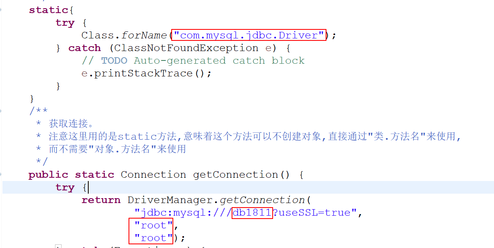

1.jdbc概念
对数据库统一访问,主要由接口组成。
驱动:jdbc接口具体实现
2.开发步骤
注册驱动
获取连接
发送sql
获取响应
释放资源
3.核心api
1)DriverManager(类): 驱动管理器
注册和管理驱动,获取连接,两种方法:
DriverManager.registerDriver(new Driver());
Class.forName("com.mysql.jdbc.Driver");
2)Connection(java.sql,接口):与数据库连接
DriverManager.getConnection(url,user,password);
url(统一资源定位符 )格式: protocol://ip:port/path?param1¶m2...
3)Statement(java.sql.Statement,接口):发送static sql(存在sql注入危险)
创建: conn.createStatement(sql)
conn.execute(): 可以发送所有sql命令,查询有值true,否则为false
conn.executeQuery():发送查询sql,返回值ResultSet
conn.executeUpdate():发送增删改,返回值int
conn.executeBatch():发送批处理,返回值int[]
4)PreparedStatement(java.sql.PreparedStatement,接口):Statement的子接口,可以预编译(即可以提前优化检测语法语义)
避免sql注入的危险
创建: ps.prepareStatement(sql)
赋值: ps.setter(parmeterIndex,value)
5)ResultSet(java.sql.ResultSet,接口):代表结果集,底层维护一个指向结果集游标(cursor)
ResultSet.next():移动游标,每次向下移动一行,开始时指向第一行的前面
ResultSet.getter(colindex/collabel):获取字段值
4.dao开发(面向接口的开发)
javaweb经典三层: 松耦合,代码复用
表示层: 接收请求和响应 web
业务逻辑层: 处理具体业务 service
数据持久层: 数据库交互 dao
dao开发:
面向接口
接口+实现类
5.硬编码处理(当你的代码打成jar包发给别人用,有硬编码问题时,如何处理)
硬编码问题的体现如下图

解决方法一般是:写成配置文件,让用户通过修改配置文件来修改给定的值: 有两种配置文件,分别是java属性文件和xml文件
java属性文件: 后缀名为 .properties。里面是一对对的key=value键值对
规范:
先给配置文件起名为:jdbc.properties
key:(以下为key的名字及其对应的含义)
driver:驱动
url:路径
user:用户名
passsword:密码
示例:
(1)先在需要打包的项目中创建一个File类型的文件在src文件夹下,文件名就叫jdbc.properties,将其作为配置文件
、dao开发、硬编码问题处理、ba_files/Image [1].png)
(2)在该文件里加上以下键值对
、dao开发、硬编码问题处理、ba_files/Image [2].png)
(3)调用该配置文件来给出现硬编码的地方重新赋相应的值。
从而JdbcUtils工具类的代码变成了如下:
具体代码的详情见eclipse的workplace为"F:\Java\eclipse_workplace_ALL\MySQL网课代码"下的项目JdbcDemo下的util包
、dao开发、硬编码问题处理、ba_files/Image [3].png)
、dao开发、硬编码问题处理、ba_files/Image [4].png)
(4)经过以上步骤,就有效避免了打成jar包被别人引用后的硬编码问题, 引用这些代码后要修改的话,只需修改配置文件里的内容即可
6.basedao开发
在上面这个案例中,代码是一步步不断优化的,直到出现了basedao。BaseDao.java代码如下:
、dao开发、硬编码问题处理、ba_files/Image [5].png)
、dao开发、硬编码问题处理、ba_files/Image [6].png)
、dao开发、硬编码问题处理、ba_files/Image [7].png)
、dao开发、硬编码问题处理、ba_files/Image [8].png)
、dao开发、硬编码问题处理、ba_files/Image [9].png)
并由此对StuDaoImpl3进行改良而出现了StuDaoImpl4。如下图: 可以看出代码非常简洁。
具体StuDaoImpl的一步步变化可以参考eclipse的workplace为"F:\Java\eclipse_workplace_ALL\MySQL网课代码"下
的项目JdbcDemo下
、dao开发、硬编码问题处理、ba_files/Image [10].png)
、dao开发、硬编码问题处理、ba_files/Image [11].png)